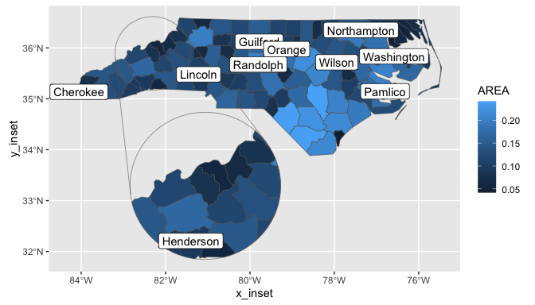

Add zoomed inset panels to your ggplot maps.
Installation
You can install ggmapinset like so:
options(repos = c(
cidmph = 'https://cidm-ph.r-universe.dev',
CRAN = 'https://cloud.r-project.org'))
install.packages('ggmapinset')Example
This example adds an inset to the first example from ggplot2::geom_sf. The inset area is defined as a circle centred on the named county, with radius 50 miles. The inset is enlarged by a factor of 2 and shifted to an empty part of the map.
library(ggmapinset)
library(ggplot2)
library(sf)
nc <- sf::st_read(system.file("shape/nc.shp", package = "sf"), quiet = TRUE)
cfg <- configure_inset(centre = st_centroid(st_geometry(nc)[nc$NAME == "Yancey"]),
scale = 2, translation = c(70, -180), radius = 50, units = "mi")
# The basic ggplot example:
# ggplot(nc) +
# geom_sf(aes(fill = AREA))
# Adding an inset means replacing geom_sf(...) -> geom_sf_inset(..., inset = cfg)
ggplot(nc) +
geom_sf_inset(aes(fill = AREA), inset = cfg) +
geom_inset_frame(inset = cfg) +
coord_sf()